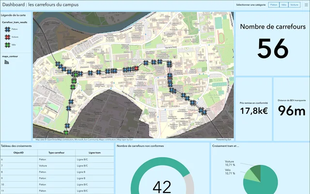
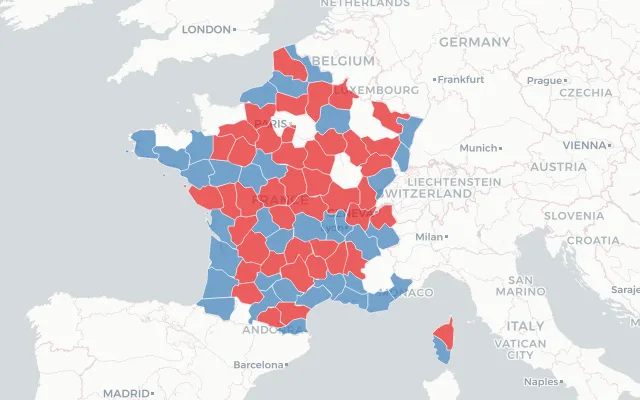
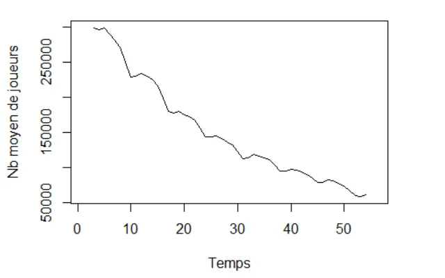

Recherche une alternance d'un an
Antoine Dot Data & Développement
Étudiant en BUT Science des Données à l'IUT2 de Grenoble‑Alpes. Passionné par la donnée, l'informatique et l'intelligence artificielle.
À propos
Étudiant en 2e année de BUT Science des Données (parcours VCOD) à l'IUT2 de Grenoble‑Alpes, je me spécialise dans le traitement et la valorisation de la donnée.
Mon stage au CNRS / IR* Progedo m'a permis de travailler sur la conception d'une pipeline ETL complète (DDI XML → Grist), ainsi que sur l'anonymisation de données d'enquêtes sous contraintes RGPD.
Trilingue français / anglais / allemand, j'aime concevoir des systèmes propres, bien typés et documentés.
- Python
- ETL
- XML / DDI
- pytest
- Docker
- R / tidyverse
- SQL
- Git / GitLab
- Linux / CachyOS
- Hyprland
- Web scraping
Projets
Stage · CNRS / IR* Progedo
Pipeline ETL DDI → Grist- DDI Codebook 2.5 (XML)
- Parsing
- Dataclasses typées
- API Grist
Développement d'une pipeline ETL complète dans le cadre de mon stage au CNRS / IR Progedo. Parsing de métadonnées DDI Codebook 2.5 en XML, intégration via l'API Grist, architecture dataclass, typage strict mypy et CI/CD GitLab.
Autres projets
- Dotfiles CachyOS / Hyprland Shell · Waybar Environnement de bureau Hyprland sur CachyOS, thème Elden Ring / Liurnia, versionné sur GitHub.
- Tetris JavaScript Grille, rotation des pièces, score et boucle de jeu. Projet web du BUT, ma première expérience en JS.
- Dino Game Python · Pygame Le jeu Dino de Chrome : obstacles procéduraux, collisions, difficulté progressive. Projet de lycée.
Travaux académiques

SAE 4.VCOD.01 · S4
Outil de visualisation géographique & saisie terrain
Traiter Valoriser Développer

SAE 4.02 · S4
Reporting d'analyse multivariée - Dashboard R Shiny
Traiter Analyser Valoriser Développer

SAE 3.03 · S3
Analyse et prévision de données temporelles
Analyser Valoriser